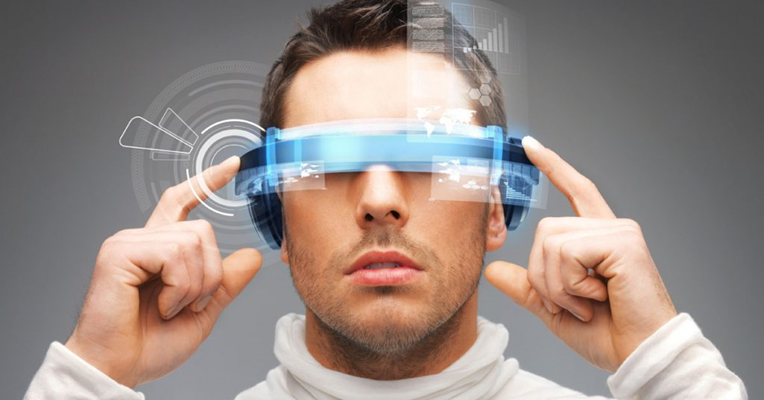

С развитием технологий компьютерная техника становится более мощной и инновационной. Важно следить за новинками, так как они влияют на нашу жизнь. Последние разработки охватывают множество областей, включая искусственный интеллект, виртуальную реальность, робототехнику и интернет вещей, улучшая качество жизни и эффективность многих процессов.
Провода-в прошлом
Современные компьютерные технологии будущего могут стать свидетелями того, как человечество преодолеет
границы, установленные шнурами и кабелями. Ученые из кембриджского Центра Микрофотоники при МТИ усердно
работают над достижением этой цели.
Сегодня провода играют ключевую роль в соединении основных элементов процессоров, но ученые надеются
заменить их на импульсы германиевых лазеров. Эти лазеры смогут передавать информацию на 100% быстрее,
чем это делают традиционные фидеры, которые используют электроны для передачи данных.
Эта инновация основана на применении системы скрытых каналов, которая включает в себя установку
микроскопических датчиков и сенсоров в специальные разъемы. Эти сенсоры преобразуют световые импульсы в
точные данные, что обеспечивает высокую скорость передачи информации. Чип с германиевым лазером,
например, уже продемонстрировал скорость передачи в 1 Тб/с – это в 2 раза выше, чем у проводных
устройств.
Таким образом, эта новая компьютерная технология не только предлагает высокую скорость передачи данных,
но и предлагает новые возможности для развития технологий. Это может изменить подход к хранению и
передаче данных, а также открыть новые горизонты для научных исследований.
Электроника для оптимизаций тела
Новейшие разработки в сфере компьютерных технологий представляют собой целый ряд уникальных
приспособлений. К ним относятся наушники-вклиничники, которые отслеживают сердечный ритм, сенсоры,
которые крепятся к одежде и контролируют осанку, а также тактильные набойки для обуви, которые с помощью
вибрации и встроенных GPS-датчиков помогают пользователю найти дорогу к месту назначения.
Все эти устройства относятся к категории “носимых электронных устройств” - это умные гаджеты, которые
упрощают жизнь людей благодаря последним достижениям науки и техники.
Например, ведущие онкологи уже используют Google Glass на основе Android для проведения сложных операций
и сбора материалов в различных клинических случаях. Эти разработки также используются обычными
гражданами, которые могут использовать голосовые команды для отправки сообщений, отслеживания погоды,
поиска авиабилетов и быстрого получения информации о первой помощи в экстренных ситуациях.
Мемристорная память
Инновационный прорыв мемристоров, или резисторов с памятью, обещает преобразить компьютерную сферу,
превратив ее в более емкую. Эта разработка является своеобразным мостом для перехода всех цифровых
устройств с недолговечного и медленного флеш-принцип хранения данных на долгосрочный и скорострельный
ReRAM (резистивная память с произвольным доступом).
Удивительно, но уникальные чипы, состоящие из чередующихся платино-титановых слоев, обещают произвести
революцию в обработке данных, позволяя человеку совершать операции в
1 000 быстрее, выполнять 1 000 000
циклов перезаписи против сегодняшних 100 000 и обрабатывать информацию мгновенно. Мемристоры имеют
потенциал стать решающими в списке новых открытий в области компьютерных технологий. Их внедрение в
портативные устройства, такие как плееры, книги и ноутбуки, даст возможность носить с собой не
гигабайты, а терабайты информации!
В планах разработчиков Quantum Science Research из Соединенных Штатов также значится создание платы
памяти объемом в 1 петабайт — свыше 1 миллиона гигабайт!
Грандиозная визуализация
Новые технологические разработки в области компьютерной техники позволят нам по-новому воспринимать реальность. Исследователи утверждают, что уже в ближайшем будущем станет возможным смотреть телевизионные программы без использования экрана. Это может быть реализовано с помощью создания портативных головных гарнитур для виртуальной реальности, специальных смартфонов для людей с ослабленным зрением и пожилых людей, а также устройств для приема и передачи видеоголограмм. Все то, что раньше казалось невозможным и присутствовало только в голливудских фильмах, сегодня становится реальностью благодаря особым проекционным экранам, трехмерному изображению и бинауральному звучанию, которое записывается с помощью микрофона, точно повторяющего форму человеческого уха!
Интерфейс "мозг-компьютер":киборгизация

Наконец, последней новой технологией в мире компьютерных технологий является соединение главного органа
центральной нервной системы человека - мозга - с высокоскоростной вычислительной машиной. Ученые из
Гарварда, США, достигли значительных успехов в этой области, создав почти неощутимую полимерную сетку с
электродами, большинство из которых являются свободными пространствами, способными к прикреплению
нейронов, что позволяет инородной ткани становиться частью организма, продолжая выполнять свои функции.
С 2012 года команда начала экспериментировать на мышах и крысах, и этот эксперимент увенчался успехом.
Микроскопические устройства диаметром в несколько миллиметров были внедрены в мозг животных с помощью
ультратонкой иглы прямо через череп в определенные области мозга. Впоследствии выяснилось, что
имплантаты успешно прижились и продолжали интегрироваться в нейронах, причем чем дольше они находились в
мозге, тем лучше они интегрировались.
Такой прорыв может иметь огромное практическое значение. Нейроинтерфейсы позволят более детально изучить
работу мозга, а также при необходимости активировать определенные области для улучшения когнитивных
функций или восстановления после травм и заболеваний.
Улучшение техники и её своиств
Новые разработки в области компьютерных технологий тесно связаны с решением насущных проблем, важных для
благополучия общества. Например, сегодня экологи сотрудничают с нанотехнологами и инженерами для
создания экологичных, но эффективных транспортных средств и роботов. Одно из главных направлений в этой
области - искусственное структурирование углеводородов в составе композитных материалов. Это позволит
снизить вес автомобилей и других транспортных средств на 10% и, как следствие, уменьшить количество
токсичных выхлопов от сжигания топлива.
Другой важный аспект - хранение энергии. Считается, что большой успех ждет внедрение инновационных
батарей - проточных для удерживания химического потенциала веществ в жидком состоянии, вместительных
графеновых конденсаторов для многократной зарядки и разрядки аккумуляторов и нанопроволочных источников
постоянного тока на основе лития-иона для сохранения солнечной энергии.